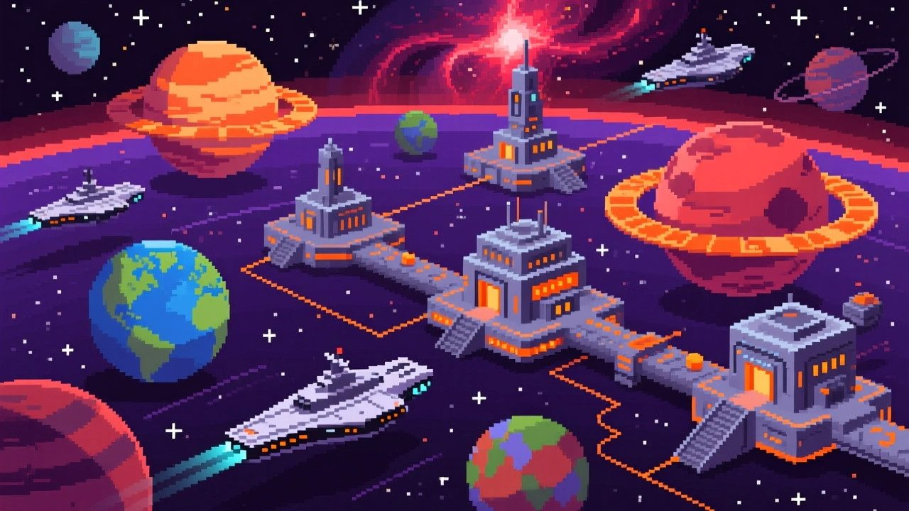
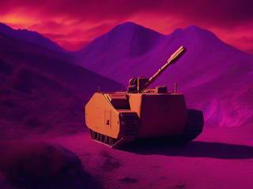
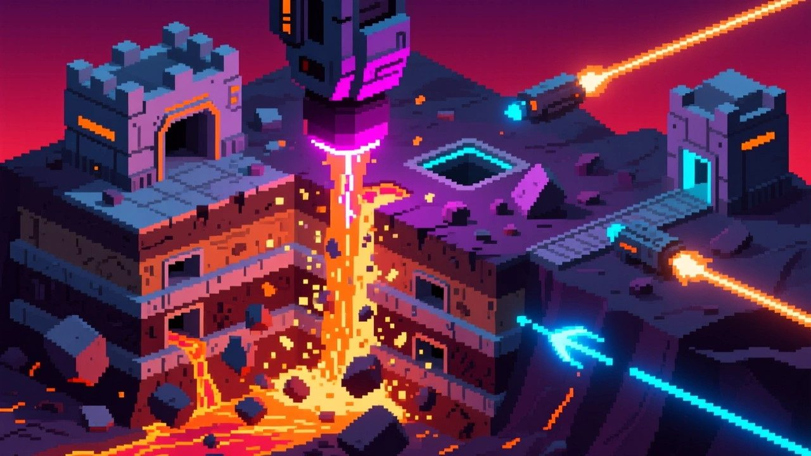
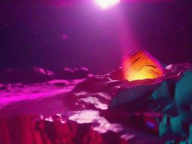
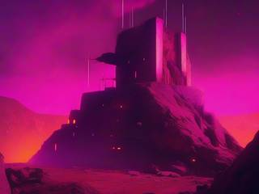
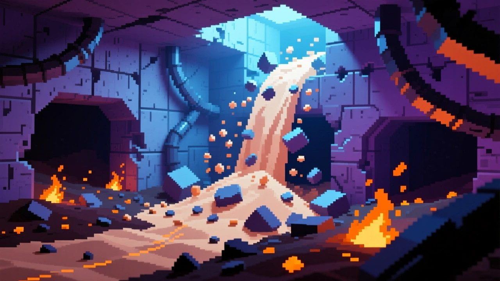
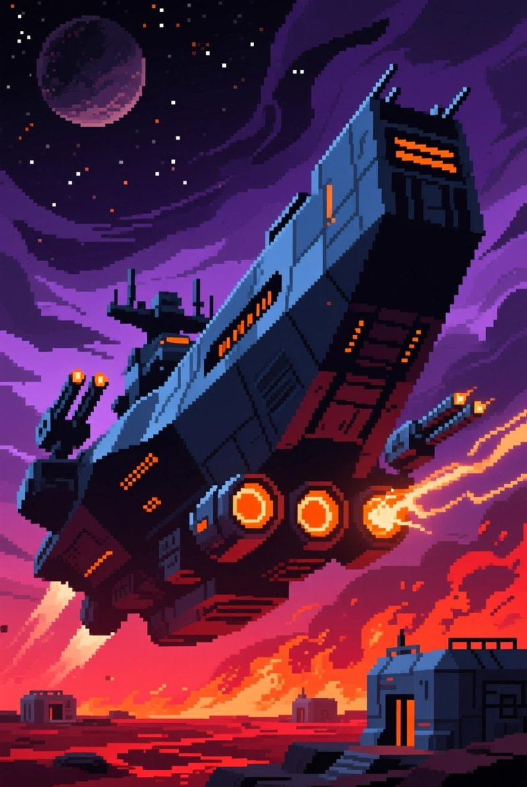

Free to forkNo licence and no copyright claim: build this game under your own name, or lift one idea from it. Why?
Game overview
Justice Will Glass Them is a small side-view falling-sand game about one thing: getting to a dictator who has buried themselves under a mountain of armor. You fly a space police warship high above their fortress and burn your way down through it, layer by layer, with a charge beam, while a point-defense gun swats away the missiles and shells that come back up.
At the bottom is the command center. Hit its core, and after a short delay it goes up in a spectacular blast while your ship climbs clear.
It's one of Reactorcore's falling-sand designs: short, focused games built on a pixel-physics engine in the style of The Powder Toy, each with just enough structure to stand as a proper game, at the scale of a good Newgrounds or Kongregate classic. The layered fortress nods to the armored Geofront of Neon Genesis Evangelion.
Target audience
Anyone who has watched the news and wished someone would just go and get the person responsible, and anyone who loves digging a hole through pixel terrain to see it crumble.
They want a short, satisfying session with a clear target and a big ending, not a sprawling sandbox with no point.
It's WASD and two mouse buttons. Learnable in a minute.
Game's purpose
Justice and protection: stopping someone who hurt many people and believes they're out of reach.
Power and play: the tactile pleasure of a beam melting through rock and metal, and of watching it all fall.
Clarity: one target, one fortress, one ending.
It deliberately avoids draining rest (a fortress is a single short sitting) and safety: the dictators are fictional, built from what they did, never from real people or groups.
Core concept
Falling-sand games are wonderful toys with no reason to play them, and destruction games tend to run out after their handmade levels.
Here every fortress is generated from random layers, pockets and buildings, and the structure gives the destruction a purpose: find the bunker, reach it, end it.
When one dictator falls, there's always another fortress somewhere on the patrol route.

"Every colony world is on the patrol route, and under one of them, someone thinks they've dug deep enough."
Lore and story
The buried dictators

Out on the colony worlds, now and then someone seizes power, does terrible things to the people under them, and then digs in. They pile layer after layer of rock, concrete and metal over a command bunker, fill the gaps with anti-air guns, and sit at the bottom believing nothing can reach them.
Each one is generated: a name, a world and a list of crimes. They're built from what they did, cruelty, greed and contempt for everyone below them, and never modelled on any real person, nation or group.
The space police
Ground forces can't dig that deep in time. So the space police send a warship: one heavily armed ship hanging high above the fortress, with a charge beam powerful enough to melt through anything given time, and the fire control to survive while it does.
The point isn't revenge. It's that the dictator is still in there, and still giving orders. The fortress is the only thing between them and whatever they do next.
The job
Find the command center, reach it, and destroy its core. Then get out before it goes.
Controls and interface
The warship moves slowly, so most of the game is in the mouse: aiming the beam where it will dig best, and aiming the gun at whatever is coming up at you.
Fly
W A S D
Move the warship, slowly
Esc
Pause
Fire
Mouse
Aim both weapons
Mouse 1
Charge beam: dig, burn and destroy
Mouse 2
Point-defense machine gun
Everything that's a threat is drawn in vivid, saturated color, from explosions and fire to lasers and projectiles, while the terrain stays in muted tones, so incoming fire never gets lost in the rubble.

"The charge beam digs and burns its way down. The point-defense gun shoots down what the fortress fires back."
Game layers
01 · Moment-to-moment
Burn, dodge, shoot down

You hang above the fortress and cut down into it. Loose material crumbles and falls into the hole, fires catch, buildings collapse, and every new cavity you open may hold another gun.
The work alternates between digging and defending: line up the beam, then switch to the machine gun when a missile streaks up out of a freshly opened pocket.
02 · Low metagame
One fortress, top to bottom

A case is a single fortress: surface defenses first, then layer after layer, the clues getting clearer as you go deeper, until the command center opens up and its core goes off.
If the warship takes too much damage, it pulls back for repairs and returns over the same fortress, exactly as wrecked as you left it. Nothing you dug is ever filled back in.
03 · High metagame
The patrol route
There's always another case: a new dictator, a new world, a new fortress generated from new layers. The game never runs out of them, and it never makes them harder on a schedule; each fortress is simply different.
Closed cases go into the precinct's case files: who they were, what they did, the world they ruled, and a picture of the crater they left. A record of the work, nothing more.
04 · Practical game flow
One case per coffee
Launch, read the case, and the warship is already over the target. A fortress takes about ten to twenty minutes.
Stop after any case, or pause mid-dig: the fortress waits. Play one before work or five in an evening.
Game modes
There's one mode: the patrol, one generated fortress after another. It's a small game on purpose, and it knows it. Everything it has goes into making each dig down to a buried bunker feel good.
Features and mechanics
The heart of it
Layer by layer
Every fortress is built from randomly generated layers of material (earth, rock, concrete, metal) in four grades: soft, medium, hard and ultrahard. Random air pockets are scattered through them, and rectangular buildings sit on the surface and underground.
Solid material has its own pixel colors. Once it's knocked loose or destroyed, it turns into one shared rubble color for that level and starts to behave like falling sand: it pours, slides and piles up. So the solid fortress always stands out from the wreckage, and you can see at a glance how far you've come.

"Knocked-loose material turns one rubble color and falls like sand, so whatever is still solid always stands out."
Two guns, two jobs
Charge beam and point defense
The charge beam is the digging tool and the main weapon at once: it melts, burns and blows apart terrain, buildings and turrets alike. The point-defense machine gun is for what comes the other way: it shoots incoming missiles and shells out of the air before they reach the ship.
Both aim with the mouse, so the rhythm of the game is choosing which one the moment needs.
The fortress shoots back
Defenses in the dirt
Anti-air launchers wait in the air pockets, and only wake up when your digging opens their pocket to the sky. Then they fire missiles at your ship, to be dodged or shot down.
Buildings on the surface and underground carry turrets that lob slow cannon shells upward. Take them out with the beam, or knock out the ground under them and let them fall.
Where is it?
Fog of war and clues
The fortress is hidden under a fog of war, and the command center could be anywhere below. As you dig deeper, clues are revealed (cables, vents, guard posts, reinforced walls) that narrow down where the bunker must be.
Reading them saves a lot of digging. Ignoring them means burning a wide crater and hoping.
The ending
The core
At the very bottom sits the command center's core. Break through to it and destroy it, and after a short delay it detonates in a blast that tears through everything that's left, as your warship climbs away.
It's the payoff for every layer above it, and it's why the game is called what it is.
Readable chaos
A palette that tells you what matters
The terrain is drawn from a narrow, desaturated range of colors over a dark two-color gradient sky. Explosions, fire, lasers and projectiles are the only vivid things on screen.
However much of the fortress is crumbling at once, the things that can hurt you, and the things you're doing, stay easy to see.

Warrant issued
Justice Will Glass Them: Orbital Bunker Buster
The suspect is under layer after layer of rock, concrete and steel, surrounded by anti-air guns, and convinced that makes them untouchable. They are wrong.
Take position overhead. Charge the beam. Keep the sky clear. Follow the clues down, layer by layer, until there's nothing left between you and the bunker.